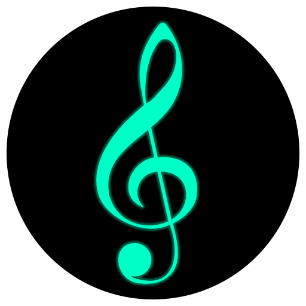
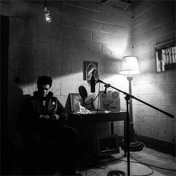
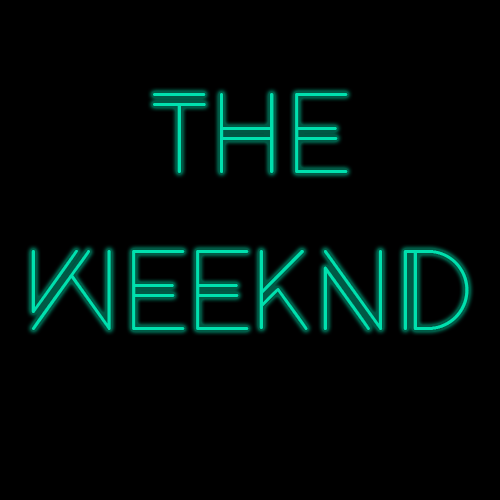
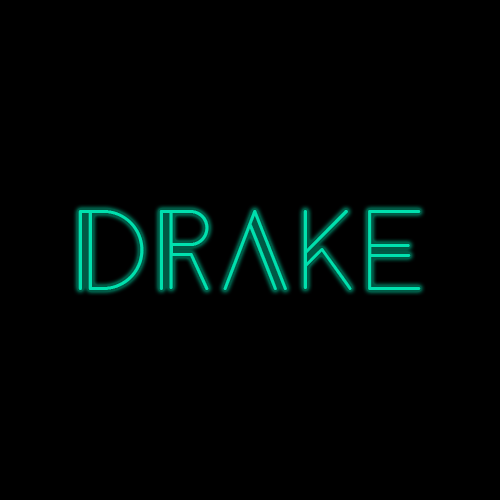
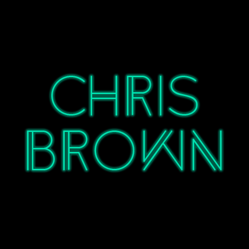
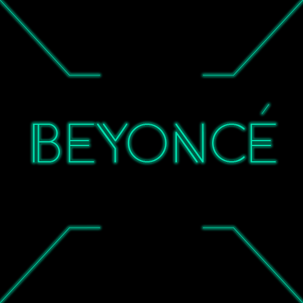

Inicio
O que é?
História
Artistas

O que é?
É um termo comercial introduzido nos Estados Unidos no final da década de 1940 pela revista Billboard. O termo foi usado originalmente para descrever gravações comercializadas predominantemente por artistas Afro-americanos, num momento em que um estilo baseado no jazz com uma batida pesada e insistente estava se tornando mais popular. O termo teve uma série de mudanças no seu significado. Começando na década de 1960, após este estilo de música contribuir para o desenvolvimento do rock and roll, a expressão R&B passou a ser utilizada - especialmente por grupos brancos - para se referir a estilos musicais que se desenvolveram a partir do blues e do associado eletric blues, bem como o gospel e a soul music. Desde a década de 1990, o termo R&B contemporâneo é utilizado principalmente para se referir a um subgênero com influencias de soul, funk e hip-hop na música pop. Em suas primeiras manifestações, o chamado rhythm and blues era uma versão negra de um predecessor do rock. Foi fortemente influenciado pelo jazz, particularmente pelo chamado jump blues (Blues em andamento acelerado, mais precisamente o boogie woogie, influenciado por big bands, especificamente o swing)[2] assim como pelo gospel. Por sua vez, também influenciou o jazz, dando origem ao chamado hard bop (produto da influência do rhythm and blues, do blues e do gospel sobre o bebop) e posteriormente ao Jazz Fusion e Smooth Jazz. Os músicos davam pouca atenção às distinções feitas entre o jazz e o rhythm and blues, e geralmente gravavam nos dois gêneros. Várias bandas (como as que acompanhavam os músicos Jay McShann, Tiny Bradshaw, e Johnny Otis) também gravavam rhythm and blues. Mesmo um ícone de arranjos bebop como Tadd Dameron também produziu arranjos R&B para Bull Moose Jackson, e trabalhou dois anos como pianista de Bull Moose após se estabelecer como músico de bebop. Um dos nomes que se destacou neste gênero foi Muddy Waters. Não foi só no cabaré pop dos Estados Unidos, mas também no do Reino Unido durante os anos 60, que o R&B atingiu seu auge de popularidade. Sem sofrer o mesmo tipo de distinção racial que limitava sua aceitação nos EUA, os grupos musicais britânicos rapidamente adotaram este estilo de música, e grupos como os Rolling Stones e The Animals levaram o rhythm'n'blues a grandes platéias. O termo caiu em desuso nos anos 60, e foi substituído por soul e Motown, porém ressurgiu nos últimos anos para designar a música negra norte-americana abrangendo o pop, fortemente influenciado pelo hip hop, pelo funk, e pelo soul. Neste contexto, só a abreviatura R&B é usada, e não a expressão toda.
Clique na imagem e será redirecionado ao album correspondente

História do R&B
Durante a Segunda Guerra Mundial, devido à dificuldade de manter agenda de shows lucrativos, os líderes de algumas ‘’big bands’’ foram forçados a reduzir o tamanho dos grupos, no fim dos anos de 1930. Estas grandes bandas reduzidas especializaram-se em hard-swing, boogie-woogie, mais simples e temperados com letras bem humoradas e performances aguerridas. Elas foram chamadas de jump blues.[3] Um detalhe importante é que esses grupos também chamados de combo blues surgiram também devido às dificuldades que os negros sentiam para manter o nível de vida nas grandes cidades. Foi a época da migração dos negros pra as grandes cidades, e foi também no pós guerra que o consumismo aumentou. A guitarra elétrica ou guitarra acústica amplificada, passa a ser mais presente no blues, principalmente o de Chicago.[4][5] O R&B, além de suas raízes country blues (delta blues e piedmont blues) e antigas formas de música americana, foi influenciado também pela música cubana. Foi na década de 1920 que a indústria fonográfica separou a música negra como race records para música afro-americana e hillbilly para música de branco. O termo hillbilly (caipira), considerada degradante, foi rotulada de old-time music como eufemismo pela Okeh Records para descrever a forma de música de Fiddlin' John Carson, já que a Okeh havia criado a race records 3 anos antes com o sucesso do blues de Mamie Smith. O termo country music foi adotado nos anos de 1940 para evitar o termo hillbilly ainda usado na época.[6] Substituiu também o termo old-time music. Não havia uma divisão muito clara das duas músicas, exceto a etnia.[7] Negros e brancos dividiam o mesmo repertório como músicos livres, e foi separado na imigração dos negros para áreas urbanas na década de 1920 em simultâneo com o desenvolvimento da indústria fonográfica. Blues serviu como código por uma gravação designada à vendas para negros, além do racismo.[8]
Artistas
Esta é uma lista de músicos mais famosos atualmente de rhythm and blues (R&B), ou seja, é uma lista resumida que contém músicos que, de modo significativo, produzem ou produziram canções que se enquadram no gênero R&B.



